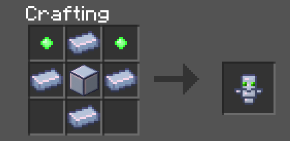
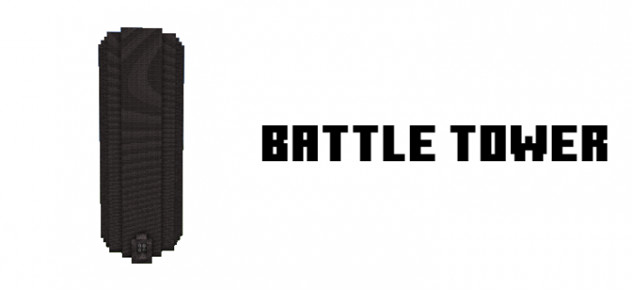
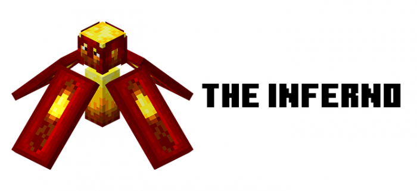

哥布林模组
模组概况
模组名：Adventure Expansion
模组地址：https://mcpedl.com/adventure-expansion-addon/
模组教程
玩法1 哥布林突袭
开启全新的哥布林突袭副本吧！打倒新添加的哥布林怪物获得经验和奖励！
会生成以下怪物：
- 哥布林战士
- 哥布林游侠、
- 哥布林召唤师
- 哥布林步兵
- 哥布林野兽（BOSS）
如何开启副本？
简单副本
只需要制造哥布林旗帜就可以开启简单副本
把哥布林旗帜放在地面上 然后点击哥布林旗帜 就会开始生成哥布林啦！
困难副本
如果觉得简单副本太过于简单，也可以开启困难副本！开启方法：使用激怒图腾（totem of enraging）点击哥布林旗帜
激怒图腾合成方法：

玩法2 哥布林商人
哥布林商人类似于流浪商人会随机停留下来。你可以从哥布林商人那里购买到独家新物品！例如全新的武器 护甲......
TIP:哥布林商人不接受绿宝石，只接受橙色蓝宝石。你可以通过参与哥布林突袭副本获得橙色蓝宝石
玩法3 龙穴
你可以在地下找到龙穴！龙穴中会有一颗特殊的龙蛋，可以通过打破它并放回原位并等待 4-5 分钟来孵化。这条龙孵化后，您可以等到它长大或喂它牛排或煮熟的猪排，一旦它长大，您就可以用牛排或猪肉驯服它。驯服龙后，您可以骑乘它飞上天空！
玩法4 战斗塔
你可以在主世界中找到战斗塔

需要拥有金钥匙（tower key）才可以进入战斗塔。制作金钥匙需要有钥匙模具。去地牢和矿井找到钥匙模具（tower key mold）吧！ 拥有钥匙摸具后你还需要用8金锭包围模具以获得塔钥匙
玩法5 地狱新BOSS（Inferno）
Inferno 是一种更强大的BOSS，其外观类似于 Minecon 2017 中取消的“Hovering Inferno”和未使用的 Minecraft Dungeons 生物“Wildfire”，这种生物发射出更强大的火球，造成更大的伤害。它的近战攻击也强很多。他们会掉落可用于火焰法杖的“地狱碎片”。
玩法5 城堡 魔法 魔法武器 海盗船
更多全新的内容等待你的探索！！
魔法部分教程即将推出！